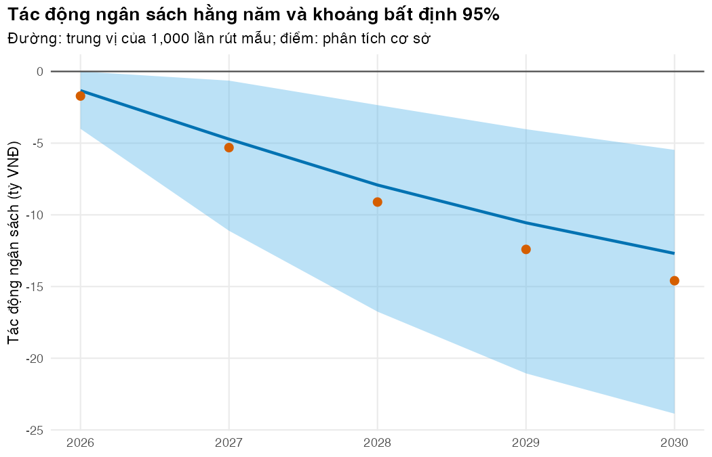

Bài 4: Truyền đạt kết quả cho người ra quyết định và quy trình HTA
Biến các bảng kết quả thành một bản tóm tắt chính sách một trang, nói về bất định bằng cả con số và lời
Vì sao bạn nên quan tâm?
Năm 2023, 62.9% kinh phí phòng, chẩn đoán và điều trị lao của Việt Nam đến từ nguồn bên ngoài, chủ yếu Quỹ Toàn cầu (Oh và c.s. 2026). Khi nguồn tài trợ thu hẹp, quyết định như mở rộng BPaLM, với giá thuốc khoảng 7.1 triệu VNĐ một đợt (ITPC-EECA 2025), sẽ phải được cân nhắc trong ngân sách trong nước. Người giữ ngân sách thường chỉ có vài phút và một trang giấy cho mỗi vấn đề. Nếu trang đó chép sai một con số, hoặc nói “chắc chắn tiết kiệm” khi mô hình chưa tính hết bất định, quyết định có thể sai. Bài này dạy cách gói ba bài trước vào một trang mà mọi con số đều sinh từ code, và nói rõ mình chắc đến đâu.
Mục tiêu học tập
Sau bài này, bạn có thể:
Sắp kết quả của phân tích chi phí-hiệu quả (CEA), tác động ngân sách (BIA), chi phí-hiệu quả theo phân phối (DCEA) và chi phí-hiệu quả mở rộng (ECEA) thành câu trả lời cho những câu hỏi mà người ra quyết định thực sự đặt ra.
Viết một bản tóm tắt chính sách (policy brief) một trang trong đó mọi con số được sinh từ code.
Diễn đạt bất định bằng con số đi kèm lời, nói rõ xác suất đó bao gồm những nguồn bất định nào, và phân biệt khoảng bất định của tham số với giả định cấu trúc.
Mô tả các bước của một quy trình đánh giá công nghệ y tế (HTA), vai trò của thảo luận có cân nhắc (deliberation), và những gì đã biết chắc về HTA ở Việt Nam.
Ý chính
Bắt đầu bằng câu trả lời, không bằng phương pháp. Một bảng kết quả chính, một hình, mọi ô đều tính từ code.
Người ra quyết định thường hỏi năm câu: có đáng tiền không, ngân sách đổi bao nhiêu, ai chi và khi nào, ai được lợi, gia đình người bệnh có được bảo vệ không.
Giá trị ngưỡng (giá trung hòa ngân sách, ε*) thường có ích hơn một ước tính điểm: chúng cho biết điều gì phải xảy ra để kết luận đổi.
Luôn nói con số kèm lời: người đọc hiểu các cụm từ như “có khả năng” rất khác nhau, kể cả khi đã có hướng dẫn (Budescu, Broomell, và Por 2009).
Tách hai loại bất định: bất định trực tiếp về con số (khoảng, xác suất) và bất định gián tiếp về chất lượng bằng chứng và giả định (Bles và c.s. 2019).
Khoảng từ mô phỏng là khoảng bất định, không phải khoảng tin cậy.
Một xác suất chỉ có nghĩa trong phạm vi những gì được rút mẫu. “Gần như chắc chắn tiết kiệm” khi chỉ biến thiên giá và tỷ lệ áp dụng không phải là chắc chắn thật; hãy ghi rõ phạm vi, và đưa giả định cấu trúc vào kịch bản.
Đánh giá công nghệ y tế (HTA) là quy trình đa ngành, nhiều bên cùng tham gia; con số từ mô hình chỉ là một đầu vào cho thảo luận có cân nhắc với các bên liên quan (Oortwijn và c.s. 2022).
Nội dung
Người ra quyết định hỏi gì
Câu hỏi
Phương pháp
Bài
Có đáng tiền không?
CEA: tỷ số chi phí-hiệu quả gia tăng (ICER), lợi ích ròng quy ra tiền (NMB), lấn át, đường biên hiệu quả
M02 Bài 5
Ngân sách đổi bao nhiêu, năm nào?
BIA
Bài 1
Ai chi thêm, ai tiết kiệm?
BIA theo đơn vị chi trả
Bài 1
Ai được lợi, có đánh đổi công bằng không?
DCEA, mặt phẳng tác động công bằng
Bài 2
Gia đình người bệnh có được bảo vệ không?
ECEA, chi phí thảm họa
Bài 3
Chắc chắn đến đâu, điều gì làm đổi kết luận?
PSA, phân tích kịch bản, giá trị ngưỡng
M03, Bài 1, Bài 4
Mỗi câu có một con số chính. Bản tóm tắt không cần thêm gì ngoài các con số đó, mức chắc chắn của chúng, và những giả định quyết định kết luận.
Bản tóm tắt chính sách một trang
Một cấu trúc dùng được cho hầu hết các bản tóm tắt:
Tiêu đề là kết luận, không phải chủ đề: “Mở rộng BPaLM tiết kiệm ngân sách”, không phải “Đánh giá kinh tế BPaLM”.
Ba thông điệp chính, mỗi thông điệp một câu, có con số.
Một bảng kết quả chính trả lời các câu hỏi ở trên, có cột mức chắc chắn.
Một hình, thường là ngân sách theo năm có khoảng bất định.
Điều gì sẽ làm đổi kết luận: các giá trị ngưỡng và giả định cấu trúc quan trọng nhất.
Công bằng và bảo vệ tài chính: ai được lợi, ai vẫn chưa được bảo vệ.
Giới hạn và dữ liệu cần có để quyết định chắc hơn.
Phương pháp và nguồn trong một đoạn ngắn; chi tiết để ở phụ lục báo cáo theo bảng kiểm CHEERS 2022 (Husereau và c.s. 2022).
Với BIA, nhóm công tác ISPOR khuyên báo cáo đầu vào và phép tính đủ chi tiết để người khác làm lại được, và trình bày kết quả theo dạng mà người ra quyết định cần (Sullivan và c.s. 2014). Khi bản tóm tắt được viết bằng Quarto như bài này, mọi con số được tính lại mỗi lần biên dịch, nên không có số nào bị chép sai.
Nói về bất định
Có ba lớp bất định cần nói riêng. Tham số: giá thuốc, tỷ lệ biến cố bất lợi, tỷ lệ đủ điều kiện, tỷ lệ áp dụng, số người bệnh; trình bày bằng khoảng bất định 95% và xác suất từ phân tích độ nhạy xác suất (probabilistic sensitivity analysis, PSA; M03). Cấu trúc: các giả định như cách áp RR cho tử vong trong điều trị (M02 Bài 5), có điều trị lại hay không, dùng trung vị hay trung bình cho chi phí nằm viện, hay cơ cấu phác đồ hiện tại; trình bày bằng kịch bản, không gộp vào khoảng. Chất lượng bằng chứng: ví dụ hiệu quả của hỗ trợ tiền mặt lấy từ nghiên cứu lao nhạy thuốc, hay hai nghiên cứu trái ngược nhau về chi phí người bệnh (Bài 3); nói thẳng bằng lời. Mỗi xác suất phải đi kèm phạm vi.
Với xác suất, nói con số trước, lời sau, và có thể thêm tần suất tự nhiên (“bao nhiêu trong 10 lần mô phỏng”). Budescu và cộng sự cho thấy người đọc báo cáo IPCC gán cho các cụm từ xác suất những giá trị lệch đáng kể so với hướng dẫn, kể cả khi có hướng dẫn trong tay, và đề xuất một cách trình bày khác hiệu quả hơn (Budescu, Broomell, và Por 2009). Van der Bles và cộng sự tổng hợp các cách diễn đạt bất định trực tiếp và gián tiếp; có một số bằng chứng rằng nói rõ bất định không nhất thiết tác động xấu đến người nghe, dù tác động khác nhau theo người nghe và cách trình bày (Bles và c.s. 2019). Hàm prob_words() dùng các mốc của thang khả năng (likelihood scale) trong báo cáo IPCC mà Budescu và cộng sự đã thử nghiệm, gộp thành bảy cụm không chồng lấn. Vì người đọc hiểu các cụm từ này rất khác nhau, khóa học luôn in con số kèm theo lời.
Quy trình HTA
flowchart LR A["Chọn chủ đề<br/>ưu tiên"] --> B["Xác định phạm vi<br/>quần thể, so sánh, quan điểm"] B --> C["Đánh giá (assessment)<br/>hiệu quả, an toàn, CEA, BIA,<br/>công bằng, khả thi"] C --> D["Thẩm định (appraisal)<br/>thảo luận có cân nhắc"] D --> E["Quyết định<br/>và khuyến nghị"] E --> F["Triển khai,<br/>theo dõi"] F -.->|bằng chứng mới| A
flowchart LR
A["Chọn chủ đề<br/>ưu tiên"] --> B["Xác định phạm vi<br/>quần thể, so sánh, quan điểm"]
B --> C["Đánh giá (assessment)<br/>hiệu quả, an toàn, CEA, BIA,<br/>công bằng, khả thi"]
C --> D["Thẩm định (appraisal)<br/>thảo luận có cân nhắc"]
D --> E["Quyết định<br/>và khuyến nghị"]
E --> F["Triển khai,<br/>theo dõi"]
F -.->|bằng chứng mới| A
Định nghĩa do INAHTA và HTAi cùng xây dựng mô tả HTA là một quy trình đa ngành, dùng phương pháp minh bạch để xác định giá trị của một công nghệ y tế ở các thời điểm khác nhau trong vòng đời của nó (O’Rourke, Oortwijn, và Schuller 2020). Mô hình kinh tế của khóa học nằm ở bước đánh giá. Bước thẩm định là nơi các con số gặp những cân nhắc khác: công bằng, tính khả thi, tiếng nói của người bệnh. Nhóm công tác HTAi/ISPOR đưa ra hướng dẫn và bảng kiểm để thiết kế quá trình thảo luận có cân nhắc qua các giai đoạn của HTA (Oortwijn và c.s. 2022). Khung tham chiếu iDSI gợi ý các nguyên tắc phương pháp cho đánh giá kinh tế ở nước thu nhập thấp và trung bình, như một công cụ hỗ trợ tư duy chứ không phải khuôn cứng (Wilkinson và c.s. 2016).
Việt Nam. Theo một nghiên cứu định tính dựa trên phỏng vấn năm 2017–2018, Việt Nam đưa HTA vào quá trình ra quyết định về danh mục quyền lợi bảo hiểm y tế từ năm 2014; các rào cản gồm thiếu nhân lực, hạ tầng dữ liệu hạn chế, chưa có hướng dẫn phương pháp, sự chú ý vào tiết kiệm ngân sách trước mắt và sự phản đối của công chúng (Lee và c.s. 2021). Với lao, câu hỏi ngân sách càng gấp vì phần lớn kinh phí còn đến từ tài trợ, và các nước đang thu hẹp điều kiện nhận Quỹ Toàn cầu phải chuyển dần các khoản này sang quỹ BHYT và ngân sách trong nước (Oh và c.s. 2026). Một ví dụ về bằng chứng dẫn đến chính sách là khảo sát chi phí người bệnh lao năm 2016 (Bài 3) (Hoa và Nhung 2019). Chi tiết về các văn bản và cơ quan HTA hiện hành chưa được kiểm chứng trong khóa học; xem M09 Bài 5 về bối cảnh ra quyết định.
Thực hành
Nạp hàm, tham số và các giá trị chung. Kiểm tra: không có lỗi.
# Vietnamese text in tables and figures needs a UTF-8 locale (Rscript may start in "C")if (!isTRUE(l10n_info()[["UTF-8"]])) invisible(Sys.setlocale("LC_CTYPE", "en_US.UTF-8"))source("../_shared/R/helpers.R")source("../_shared/R/vn_data.R")source("../m02-cohort-markov/code/model.R")source("code/model.R")library(ggplot2)p02 <-m02_params("../m02-cohort-markov/params/mdrtb.csv")pb <-read_params("params/bia.csv")pe <-read_params("params/equity.csv")payer <-read_payer("params/payer.csv")ctx <-vn_context()ptab_bia <-attr(pb, "table")n_patients <-sum(current_counts(pb))mix <-current_mix(pb)k <- ctx$wtp_low# Exercise settings (analysis choices, not data)saving_target <-30e9# Exercise 1: a 5-year saving target (VND)se_target <-0.005# Exercise 3: target Monte Carlo standard error of a probabilitybn <-function(x) x /1e9
Tính lại các con số chính của M02 và Bài 1–3 bằng chính các hàm đã dùng. Không chép số từ bài trước: nếu một tham số đổi, bản tóm tắt tự cập nhật. Kiểm tra: các điều kiện mà lời văn dựa vào (BPaLM chiếm ưu thế so với cả phác đồ ngắn lẫn phác đồ dài hạn, tức rẻ hơn và thêm năm sống điều chỉnh theo chất lượng, QALY; tiết kiệm trong 5 năm; tỷ lệ hộ gặp chi phí thảm họa giảm) đều đúng (stopifnot).
# Recompute the headline numbers of Lessons 1-3 from the same functions (no copy-paste)cea <-run_cea(p02)cmp_short <-compare_regimens(cea, new ="bpalm", ref ="short") # course threshold from kb/_sharedcmp_long <-compare_regimens(cea, new ="bpalm", ref ="long")res <-bia_resources(p02)prof <-bia_profiles(res, p02, pb)bia <-run_bia(pb, prof)bia_tab <-bia_by_year(bia, pb$start_year)payer_y1 <-bia_by_payer(bia, payer)[1, ]pp <-patient_outcomes(p02, pe, mix)h0 <-quintile_vector(pe, "qale_q")dist <-lapply(c(bpalm ="bpalm", target ="bpalm_target", all ="bpalm_all"),function(s) dcea_summary(dcea_distribution(pp, pe, n_patients, s, k), h0, ctx$population, 0))grid <-income_grid(log(median_income_vnd(pe)), fit_income_sigma(quintile_vector(pe, "inc_share_q")))ecea_b <-ecea_table(pp, pe, n_patients, "bpalm", grid, ref ="now")w_case <-quintile_vector(pe, "share_case_q")# Threshold value for the brief: BPaLM drug price at which the 5-year impact is zero (Lesson 1)price_neutral <-budget_neutral_price(pb, p02, res)key <-list(d_cost = cmp_short$d_cost, d_qaly = cmp_short$d_qaly, status_short = cmp_short$status,status_long = cmp_long$status,bia_5y =sum(bia_tab$impact), bia_y1 = bia_tab$impact[1],ntp_y1 = payer_y1[["ntp"]], shi_y1 = payer_y1[["shi"]],deaths_averted =sum(ecea_b$deaths_averted), nhb = dist$bpalm$total_nhb,che_now =sum(w_case * ecea_b$che_ref), che_bpalm =sum(w_case * ecea_b$che_new),price_neutral = price_neutral, poor_share =sum(w_case[1:2]))str(key)
List of 14
$ d_cost : num -6677215
$ d_qaly : num 0.479
$ status_short : chr "dominant"
$ status_long : chr "dominant"
$ bia_5y : num -4.31e+10
$ bia_y1 : num -1.71e+09
$ ntp_y1 : num 3.89e+08
$ shi_y1 : num -2.1e+09
$ deaths_averted: num 90.8
$ nhb : num 1896
$ che_now : num 0.912
$ che_bpalm : num 0.865
$ price_neutral : num 2645481
$ poor_share : num 0.54
# Claims that the text below relies onstopifnot(key$status_short =="dominant", key$status_long =="dominant", key$bia_5y <0, key$che_bpalm < key$che_now, !is.na(key$price_neutral), key$deaths_averted >0)# The brief says the poorest households stay above the threshold even with BPaLMstopifnot(ecea_b["Q1", "che_new"] >0.99)
Giả định cấu trúc không có phân phối, nên ta chạy lại BIA dưới từng giả định thay vì gộp vào một khoảng: cơ cấu điều trị hiện tại, số người được phát hiện, chi phí nằm viện theo trung bình, hai cách áp RR cho tử vong của BPaLM và việc bỏ vòng điều trị lại trong M02. Kiểm tra: dòng “phân tích cơ sở” khớp với kết quả ở trên.
# Structural assumptions get scenarios, not intervals: the same BIA under other choices.# Each scenario changes the M02 or BIA parameters and recomputes resource use and prices.scenario_impact <-function(p02_k, pb_k) { res_k <-bia_resources(p02_k) tab_k <-bia_by_year(run_bia(pb_k, bia_profiles(res_k, p02_k, pb_k)), pb_k$start_year)c(y1 = tab_k$impact[1], total =sum(tab_k$impact), level_y1 = tab_k$current[1])}n0 <-current_counts(pb)set_counts <-function(pb_k, n) { pb_k$who_tx_18m_2024 <- n[["long"]]; pb_k$who_tx_9m_2024 <- n[["short"]]; pb_k$who_tx_6m_2024 <- n[["bpalm"]] pb_k}other0 <- n0[c("long", "short")] /sum(n0[c("long", "short")])no_retx <- p02no_retx$retx_rate_failed <-0no_retx$retx_rate_ltfu <-0scen <-list("Phân tích cơ sở"=scenario_impact(p02, pb),"Chưa ai dùng BPaLM (cơ cấu trước 2024)"=scenario_impact(p02, set_counts(pb, c(n0[c("long", "short")] + n0[["bpalm"]] * other0, bpalm =0))),"Mọi người không dùng BPaLM đều dùng phác đồ ngắn"=scenario_impact(p02, set_counts(pb, c(long =0, short =sum(n0[c("long", "short")]), bpalm = n0[["bpalm"]]))),"Phát hiện và điều trị đủ số ca WHO ước tính"=scenario_impact(p02, set_counts(pb, n0 * p02$who_rr_incidence /sum(n0))),"Chi phí nằm viện = trung bình thay vì trung vị"=scenario_impact(p02, replace(pb, "hosp_mean_ratio", ptab_bia$high[ptab_bia$name =="hosp_mean_ratio"])),"RR cũng áp cho tử vong khi điều trị BPaLM (mã 1)"=scenario_impact(replace(p02, "bpalm_death_rule", 1), pb),"Tỷ lệ tử vong tích lũy của BPaLM bằng phác đồ ngắn (mã 2)"=scenario_impact(replace(p02, "bpalm_death_rule", 2), pb),"Không ai được điều trị lại"=scenario_impact(no_retx, pb))scen_tab <-do.call(rbind, scen)knitr::kable(data.frame(scenario =rownames(scen_tab), y1 =fmt_num(bn(scen_tab[, "y1"]), 1),total =fmt_num(bn(scen_tab[, "total"]), 1)),col.names =c("Kịch bản", "Tác động năm đầu (tỷ VNĐ)", "Tác động 5 năm (tỷ VNĐ)"),align ="lrr", row.names =FALSE)
Kịch bản
Tác động năm đầu (tỷ VNĐ)
Tác động 5 năm (tỷ VNĐ)
Phân tích cơ sở
-1.7
-43.1
Chưa ai dùng BPaLM (cơ cấu trước 2024)
-4.8
-75.1
Mọi người không dùng BPaLM đều dùng phác đồ ngắn
-1.8
-31.4
Phát hiện và điều trị đủ số ca WHO ước tính
-5.3
-132.9
Chi phí nằm viện = trung bình thay vì trung vị
-3.6
-67.8
RR cũng áp cho tử vong khi điều trị BPaLM (mã 1)
-1.7
-42.5
Tỷ lệ tử vong tích lũy của BPaLM bằng phác đồ ngắn (mã 2)
-1.7
-43.6
Không ai được điều trị lại
-1.7
-41.7
# Does the sign of the 5-year impact change in any scenario? (used in the text)saving_in_all <-all(scen_tab[, "total"] <0)stopifnot(abs(scen_tab[1, "total"] - key$bia_5y) <1e-3)# Claims in the brief (rows 2-4): saving is larger with no BPaLM yet and with wider case finding,# smaller if the others are on the short regimen; wider case finding also raises the budget levelstopifnot(scen_tab[2, "total"] < scen_tab[1, "total"], scen_tab[4, "total"] < scen_tab[1, "total"], scen_tab[3, "total"] > scen_tab[1, "total"], scen_tab[4, "level_y1"] > scen_tab[1, "level_y1"])
Chạy BIA xác suất: rút 1,000 bộ giá trị cho giá thuốc ba phác đồ và chi phí theo dõi (qua hệ số nhân), tỷ lệ biến cố bất lợi nặng của hai nhóm thuốc, tỷ lệ đủ điều kiện, tốc độ tăng người bệnh và tỷ lệ áp dụng. Phân phối lấy từ cột dist của bảng tham số (đều, hoặc log-chuẩn tách đôi với khoảng thấp-cao làm phân vị 2.5% và 97.5%), riêng tỷ lệ biến cố bất lợi dùng phân phối beta. Không rút mẫu: kết cục lâm sàng, thời gian điều trị và quy tắc tử vong của BPaLM (M02 giữ cố định), cơ cấu phác đồ năm 2024 (số liệu báo cáo), và chi phí nằm viện (trung vị hay trung bình là lựa chọn cấu trúc). Kiểm tra: các phân vị của hàm rút mẫu khớp khoảng thấp-cao đã cho, và mọi lần chạy cho kết quả hữu hạn.
# Probabilistic BIA: prices (as multipliers), adverse-event rates, eligibility, growth and# uptake are drawn together. Distributions come from the `dist` column of the parameter# table (uniform, split lognormal) or are beta (adverse events). Left out on purpose:# resource use from M02 (clinical outcomes, durations, the BPaLM death rule) is held fixed# (M03 shows how to propagate it); the 2024 regimen mix is data; and the hospital-cost# convention (median or mean) is a structural choice, so they appear as scenarios above.set.seed(2026)n_sim <- pb$n_psaH <- pb$horizon_yearsparam_row <-function(tab_k, nm) tab_k[tab_k$name == nm, ]# Independent check of the draw function: its 2.5%, 50%, 97.5% quantiles are low, value, highq_chk <-quantile(draw_split_lognormal(1e5, 1, 0.8, 1.5), c(0.025, 0.5, 0.975))stopifnot(all(abs(q_chk /c(0.8, 1, 1.5) -1) <0.02))pb_draw <-c("mult_drug_bpalm", "mult_drug_short", "mult_drug_long", "mult_monitor","share_eligible", "growth_rate")draws <-as.data.frame(sapply(pb_draw, function(nm) draw_param(n_sim, param_row(ptab_bia, nm))))draws$ae_bpalm <-rbeta(n_sim, pb$ae_n_arm * p02$ae_bpalm, pb$ae_n_arm * (1- p02$ae_bpalm))draws$ae_soc <-rbeta(n_sim, pb$ae_n_arm * p02$ae_soc, pb$ae_n_arm * (1- p02$ae_soc))draws$uptake_u <-runif(n_sim) # one position between low and high uptake, shared by all yearsimpact_year <-matrix(NA, n_sim, H, dimnames =list(NULL, bia_tab$year))for (i inseq_len(n_sim)) { p_i <- p02 p_i$ae_bpalm <- draws$ae_bpalm[i] p_i$ae_soc <- draws$ae_soc[i] pb_i <- pbfor (nm in pb_draw) pb_i[[nm]] <- draws[i, nm]for (y inseq_len(H)) { r <-param_row(ptab_bia, paste0("uptake_y", y)) pb_i[[paste0("uptake_y", y)]] <- r$low + draws$uptake_u[i] * (r$high - r$low) } impact_year[i, ] <-bia_by_year(run_bia(pb_i, bia_profiles(res, p_i, pb_i)), pb$start_year)$impact}total_sim <-rowSums(impact_year)stopifnot(all(is.finite(total_sim)))p_saving <-mean(total_sim <0)p_saving_y1 <-mean(impact_year[, 1] <0)ci_5y <-quantile(total_sim, c(0.025, 0.5, 0.975))round(c(bn(ci_5y), p_saving = p_saving, p_saving_y1 = p_saving_y1), 3)
Tác động 5 năm có trung vị -37 tỷ VNĐ, khoảng bất định 95% từ -77 đến -13 tỷ VNĐ. Xác suất tiết kiệm trong 5 năm là 100.0% (“gần như chắc chắn”), còn xác suất tiết kiệm ngay năm đầu là 95.7% (“rất có khả năng”): khoảng 4 trong 100 lần mô phỏng, năm đầu tốn thêm tiền. Xác suất 100% từ 1,000 lần rút nghĩa là không lần nào cho kết quả ngược lại, không phải chắc chắn tuyệt đối. Hai xác suất này chỉ nói về các đầu vào đã rút mẫu ở trên; chúng không bao gồm bất định lâm sàng của M02 hay các kịch bản cấu trúc, nên đừng đọc chúng như xác suất cho toàn bộ mô hình.
band <-data.frame(year = bia_tab$year,lo =apply(impact_year, 2, quantile, 0.025) /1e9,mid =apply(impact_year, 2, quantile, 0.5) /1e9,hi =apply(impact_year, 2, quantile, 0.975) /1e9,base =bn(bia_tab$impact))fig_psa <-ggplot(band, aes(year)) +geom_ribbon(aes(ymin = lo, ymax = hi), fill = pal_course[5], alpha =0.4) +geom_line(aes(y = mid), colour = pal_course[1], linewidth =1) +geom_point(aes(y = base), colour = pal_course[2], size =2.5) +geom_hline(yintercept =0, colour ="grey30") +labs(x =NULL, y ="Tác động ngân sách (tỷ VNĐ)",title ="Tác động ngân sách hằng năm và khoảng bất định 95%",subtitle =paste0("Đường: trung vị của ", fmt_num(n_sim), " lần rút mẫu; điểm: phân tích cơ sở")) +theme_course()save_fig(fig_psa, "l04-bia-uncertainty.png")

Tác động ngân sách hằng năm và khoảng bất định 95%
Thang lời (IPCC, gộp bảy cụm), luôn đi kèm con số và tần suất tự nhiên. Kiểm tra: mỗi xác suất ứng với đúng một cụm từ.
# Words and numbers together: the same probability, phrased for a readerprobs <-c(0.005, 0.05, 0.25, 0.5, 0.8, 0.95, 0.995)knitr::kable(data.frame(p =fmt_pct(probs, 1), words =prob_words(probs),freq =paste0(fmt_num(probs *100, 1), " trên 100")),col.names =c("Xác suất", "Cách nói (luôn kèm con số)", "Tần suất tự nhiên"))
Xác suất
Cách nói (luôn kèm con số)
Tần suất tự nhiên
0.5%
gần như không thể
0.5 trên 100
5.0%
rất ít khả năng
5.0 trên 100
25.0%
ít khả năng
25.0 trên 100
50.0%
khả năng ngang nhau
50.0 trên 100
80.0%
có khả năng
80.0 trên 100
95.0%
rất có khả năng
95.0 trên 100
99.5%
gần như chắc chắn
99.5 trên 100
Lập bảng kết quả chính cho bản tóm tắt. Cột “mức chắc chắn” nói rõ xác suất tiết kiệm bao gồm những nguồn bất định nào. Kiểm tra: không ô nào gõ tay; mọi số đi qua fmt_num(), fmt_pct().
# The key-results table for a one-page brief: every cell is computed, none typedpsa_scope <-"chỉ tính bất định về giá thuốc và theo dõi, biến cố bất lợi, tỷ lệ đủ điều kiện, số người và tỷ lệ áp dụng"y1_answer <-function(ntp, shi) { part <-function(label, x) paste0(label, if (x >0) " chi thêm "else" tiết kiệm ", fmt_num(abs(bn(x)), 1), " tỷ VNĐ")paste0(part("Chương trình Chống lao", ntp), "; ", part("quỹ BHYT", shi))}brief <-data.frame(question =c("Có đáng tiền không?", paste("Ngân sách", H, "năm thay đổi bao nhiêu?"),"Năm đầu ai phải chi thêm?", "Ai được lợi?", "Gánh nặng tài chính cho hộ gia đình?"),answer =c(paste0("BPaLM rẻ hơn phác đồ ngắn 9 tháng ", fmt_num(-key$d_cost /1e6, 1), " triệu VNĐ và thêm ",fmt_num(key$d_qaly, 2), " QALY mỗi người bệnh; rẻ hơn và tốt hơn cả phác đồ dài hạn"),paste0("Tiết kiệm ", fmt_num(-bn(key$bia_5y), 0), " tỷ VNĐ (khoảng bất định 95%: ",fmt_num(-bn(ci_5y[[3]]), 0), "–", fmt_num(-bn(ci_5y[[1]]), 0), ")"),y1_answer(key$ntp_y1, key$shi_y1),paste0(fmt_num(key$deaths_averted, 0), " ca tử vong tránh được trong ", pe$death_window_months /12," năm mỗi đoàn hệ năm nếu mọi người dùng BPaLM; ",fmt_pct(key$poor_share, 0), " người bệnh thuộc hai nhóm ngũ phân vị nghèo nhất"),paste0("Hộ gặp chi phí thảm họa giảm từ ", fmt_pct(key$che_now, 0), " xuống ",fmt_pct(key$che_bpalm, 0)) ),certainty =c("Phụ thuộc giá thuốc và cách áp RR cho tử vong (M02)",paste0(prob_words(p_saving), ": xác suất tiết kiệm ", fmt_pct(p_saving, 1), ", ", psa_scope),"Phụ thuộc phân chia chi trả (số liệu tài chính WHO, Oh 2026; còn mâu thuẫn về nằm viện)","Phân bố theo nhóm là giá trị minh họa","Chi phí người bệnh từ khảo sát năm 2016; nhạy với giả định về phần chi phí cố định"))knitr::kable(brief, col.names =c("Câu hỏi của người ra quyết định", "Câu trả lời", "Mức chắc chắn"))
Câu hỏi của người ra quyết định
Câu trả lời
Mức chắc chắn
Có đáng tiền không?
BPaLM rẻ hơn phác đồ ngắn 9 tháng 6.7 triệu VNĐ và thêm 0.48 QALY mỗi người bệnh; rẻ hơn và tốt hơn cả phác đồ dài hạn
Phụ thuộc giá thuốc và cách áp RR cho tử vong (M02)
Ngân sách 5 năm thay đổi bao nhiêu?
Tiết kiệm 43 tỷ VNĐ (khoảng bất định 95%: 13–77)
gần như chắc chắn: xác suất tiết kiệm 100.0%, chỉ tính bất định về giá thuốc và theo dõi, biến cố bất lợi, tỷ lệ đủ điều kiện, số người và tỷ lệ áp dụng
Năm đầu ai phải chi thêm?
Chương trình Chống lao chi thêm 0.4 tỷ VNĐ; quỹ BHYT tiết kiệm 2.1 tỷ VNĐ
Phụ thuộc phân chia chi trả (số liệu tài chính WHO, Oh 2026; còn mâu thuẫn về nằm viện)
Ai được lợi?
91 ca tử vong tránh được trong 5 năm mỗi đoàn hệ năm nếu mọi người dùng BPaLM; 54% người bệnh thuộc hai nhóm ngũ phân vị nghèo nhất
Phân bố theo nhóm là giá trị minh họa
Gánh nặng tài chính cho hộ gia đình?
Hộ gặp chi phí thảm họa giảm từ 91% xuống 86%
Chi phí người bệnh từ khảo sát năm 2016; nhạy với giả định về phần chi phí cố định
Bản tóm tắt dưới đây được viết bằng các con số tính ở trên; đổi một tham số rồi biên dịch lại, mọi con số sẽ đổi theo.
Bản tóm tắt mẫu (một số đầu vào là giá trị minh họa, chưa dùng cho quyết định)
Mở rộng BPaLM cho lao kháng thuốc: tiết kiệm ngân sách và cứu thêm người bệnh, nhưng ngân sách thuốc của Chương trình Chống lao tăng nhẹ năm đầu
Mỗi người bệnh chuyển từ phác đồ ngắn 9 tháng sang BPaLM tiết kiệm 6.7 triệu VNĐ và được thêm 0.48 QALY; so với phác đồ dài hạn, BPaLM cũng rẻ hơn và tốt hơn.
Mở rộng trong 5 năm tiết kiệm khoảng 43 tỷ VNĐ (khoảng bất định 95%: 13–77 tỷ VNĐ). Xác suất tiết kiệm là 100.0% khi chỉ tính bất định về giá thuốc và theo dõi, tỷ lệ biến cố bất lợi, tỷ lệ đủ điều kiện, số người bệnh và tỷ lệ áp dụng. Dấu của kết luận không đổi trong cả 8 kịch bản cấu trúc: khoản tiết kiệm nằm giữa 31 và 133 tỷ VNĐ.
Năm 2026, Chương trình Chống lao chi thêm 0.4 tỷ VNĐ; quỹ BHYT tiết kiệm 2.1 tỷ VNĐ.
Công bằng. 54% người bệnh thuộc hai nhóm ngũ phân vị nghèo nhất; nếu mọi người bệnh dùng BPaLM, mỗi đoàn hệ năm tránh được khoảng 91 ca tử vong trong 5 năm so với cơ cấu hiện tại. Tỷ lệ hộ gặp chi phí thảm họa giảm từ 91% xuống 86%, nhưng hộ nghèo nhất vẫn vượt ngưỡng: cần thêm bảo trợ xã hội.
Điều gì làm đổi kết luận. Ngân sách 5 năm chỉ tăng nếu giá BPaLM vượt khoảng 2.65 triệu VNĐ mỗi tháng. Khoản tiết kiệm phụ thuộc nhiều vào việc BPaLM thay phác đồ nào: 75 tỷ VNĐ nếu tính từ cơ cấu trước 2024, 31 tỷ VNĐ nếu mọi người còn lại đang dùng phác đồ ngắn. Phát hiện đủ số ca WHO ước tính sẽ nâng khoản tiết kiệm lên 133 tỷ VNĐ, đồng thời nâng ngân sách hiện tại năm đầu từ 68 lên 210 tỷ VNĐ.
Giới hạn. Tỷ lệ áp dụng, tỷ lệ đủ điều kiện, mức hỗ trợ tiền mặt và phân bố theo nhóm thu nhập là giá trị minh họa; phân chia chi trả dựa trên số liệu tài chính tổng quát và còn mâu thuẫn về chi phí nằm viện; xác suất tiết kiệm không gồm bất định lâm sàng của M02.
Mẹo thực hành
Viết tiêu đề và ba thông điệp chính trước khi làm hình. Nếu không viết được, phân tích chưa xong.
Đưa bản nháp cho một người không làm mô hình đọc lướt, rồi hỏi họ nhớ con số nào. Đó là con số bạn thực sự truyền đạt được.
Đặt các giả định cấu trúc quan trọng trong bản tóm tắt, không chôn chúng trong phụ lục.
Giữ bản tóm tắt trong cùng tệp Quarto với phân tích; khi tham số đổi, chỉ cần biên dịch lại. Tiêu đề cũng nên sinh từ kết quả, như bản mẫu trên.
Lỗi thường gặp
Chỉ nói lời, không nói số (“rất có khả năng tiết kiệm”). Người nghe hiểu cụm từ này rất khác nhau; luôn kèm xác suất.
Gọi khoảng mô phỏng là “khoảng tin cậy”. Đây là khoảng bất định của dự báo, không phải khoảng tin cậy của một ước lượng thống kê.
Gộp giả định cấu trúc vào khoảng bất định, hoặc nêu một xác suất mà không nói nó bao gồm gì. Cách áp RR cho tử vong không có phân phối; hãy trình bày nó như một kịch bản riêng, và ghi phạm vi rút mẫu bên cạnh mọi xác suất.
Một bảng dài vài trang. Người ra quyết định chỉ đọc vài dòng đầu. Phần còn lại để ở phụ lục.
Bài tập
(Dễ) Tính xác suất khoản tiết kiệm 5 năm vượt một mốc cho trước (biến saving_target trong code) và viết một câu cho bản tóm tắt, có cả con số và lời.
Lời giải
# Exercise 1: probability that 5-year savings exceed a target, in words and numbersp_target <-mean(total_sim <-saving_target)c(p =round(p_target, 3), words =prob_words(p_target))
p words
"0.675" "có khả năng"
Một câu gợi ý: “Khả năng tiết kiệm hơn 30 tỷ VNĐ trong 5 năm là 68% (có khả năng), khi chỉ tính bất định của các đầu vào đã rút mẫu”. Mức tiết kiệm trung vị là 37 tỷ VNĐ, gần mốc này, nên xác suất nhạy với giả định về phân phối.
(Vừa) Đầu vào nào giải thích nhiều nhất bất định của tác động 5 năm? Dùng hệ số tương quan hạng Spearman giữa từng đầu vào và kết quả.
Lời giải
# Exercise 2: which input drives the uncertainty? Rank correlation with the 5-year totalinput_labels <-c(mult_drug_bpalm ="giá thuốc BPaLM", mult_drug_short ="giá thuốc phác đồ ngắn",mult_drug_long ="giá thuốc phác đồ dài hạn", mult_monitor ="chi phí theo dõi",share_eligible ="tỷ lệ đủ điều kiện", growth_rate ="tốc độ thay đổi số người bệnh",ae_bpalm ="tỷ lệ biến cố bất lợi nặng của BPaLM",ae_soc ="tỷ lệ biến cố bất lợi nặng của phác đồ dài hạn/ngắn",uptake_u ="tỷ lệ áp dụng")stopifnot(all(names(draws) %in%names(input_labels)))rho <-sapply(draws, function(x) cor(x, total_sim, method ="spearman"))round(sort(rho), 2)
Đầu vào có tương quan hạng lớn nhất về trị tuyệt đối là tỷ lệ áp dụng (ρ = -0.69), rồi giá thuốc BPaLM (ρ = 0.35). Hai đầu vào này tác động ngược chiều. Tương quan dương nghĩa là đầu vào cao làm tác động ngân sách bớt âm (tiết kiệm ít đi); tương quan âm thì ngược lại. Thông điệp cho người ra quyết định: các đầu vào đứng đầu đáng được xác minh trước tiên. Tương quan hạng chỉ là chỉ báo nhanh; M03 dùng các phương pháp chặt hơn.
(Khó) Sai số chuẩn Monte Carlo của xác suất tiết kiệm năm đầu là bao nhiêu với 1,000 lần rút? Cần bao nhiêu lần rút để sai số chuẩn xuống bằng mức mục tiêu (biến se_target trong code)?
Lời giải
# Exercise 3: Monte Carlo standard error of P(saving in year 1), and the number of# draws needed to bring it down to se_targetse_y1 <-sqrt(p_saving_y1 * (1- p_saving_y1) / n_sim)n_needed <-ceiling(p_saving_y1 * (1- p_saving_y1) / se_target^2)c(p_saving_y1 = p_saving_y1, se =round(se_y1, 4), n_needed = n_needed)
p_saving_y1 se n_needed
0.9570 0.0064 1647.0000
Sai số chuẩn là \(\sqrt{p(1-p)/n}\) = 0.0064 với \(p\) = 95.7%. Muốn giảm còn 0.005 cần khoảng 1,647 lần rút. Xác suất gần 0.5 cần nhiều lần rút hơn xác suất gần 0 hoặc 1 (xem M00 Bài 6 về sai số Monte Carlo).
Tài liệu tham khảo
Bles, Anne Marthe van der, Sander van der Linden, Alexandra L. J. Freeman, James Mitchell, Ana B. Galvao, Lisa Zaval, và David J. Spiegelhalter. 2019. “Communicating uncertainty about facts, numbers and science”. Royal Society Open Science 6 (5): 181870. https://doi.org/10.1098/rsos.181870.
Budescu, David V., Stephen Broomell, và Han-Hui Por. 2009. “Improving communication of uncertainty in the reports of the Intergovernmental Panel on Climate Change”. Psychological Science 20 (3): 299–308. https://doi.org/10.1111/j.1467-9280.2009.02284.x.
Hoa, N. B., và N. V. Nhung. 2019. “National tuberculosis patients cost survey: research findings lead to change in policy and practice, Viet Nam”. Public Health Action 9 (2): 50–52. https://doi.org/10.5588/pha.18.0082.
Husereau, Don, Michael Drummond, Federico Augustovski, Esther de Bekker-Grob, Andrew H Briggs, Chris Carswell, Lisa Caulley, và c.s. 2022. “Consolidated Health Economic Evaluation Reporting Standards 2022 (CHEERS 2022) statement: updated reporting guidance for health economic evaluations”. BMJ (Clinical research ed.) 376: e067975. https://doi.org/10.1136/bmj-2021-067975.
Lee, Hwa-Young, Thuy Thi-Thu Nguyen, Saeun Park, Van Minh Hoang, và Woong-Han Kim. 2021. “Health technology assessment development in Vietnam: a qualitative study of current progress, barriers, facilitators, and future strategies”. International Journal of Environmental Research and Public Health 18 (16): 8846. https://doi.org/10.3390/ijerph18168846.
O’Rourke, Brian, Wija Oortwijn, và Tara Schuller. 2020. “The new definition of health technology assessment: a milestone in international collaboration”. International Journal of Technology Assessment in Health Care 36 (3): 187–90. https://doi.org/10.1017/S0266462320000215.
Oh, Kyung Hyun, Jeungeun Seo, Yerin Yu, Fukushi Morishita, Alia Cynthia Luz, Huong Thi Giang Tran, Rajendra Prasad Hubraj Yadav, Martin P. Grobusch, và Hongjo Choi. 2026. “Assessment of financial protection mechanisms for tuberculosis services in seven priority countries of the Western Pacific Region: a cross-sectional mixed-methods study”. Tropical Medicine and Health 54 (1). https://doi.org/10.1186/s41182-026-00979-7.
Oortwijn, Wija, Don Husereau, Julia Abelson, Edwine Barasa, Diana Dana Bayani, Vania Canuto Santos, Anthony Culyer, và c.s. 2022. “Designing and implementing deliberative processes for health technology assessment: a good practices report of a joint HTAi/ISPOR Task Force”. Value in Health 25 (6): 869–86. https://doi.org/10.1016/j.jval.2022.03.018.
Sullivan, Sean D., Josephine A. Mauskopf, Federico Augustovski, J. Jaime Caro, Karen M. Lee, Mark Minchin, Ewa Orlewska, Pete Penna, Jose-Manuel Rodriguez Barrios, và Wen-Yi Shau. 2014. “Budget impact analysis-principles of good practice: report of the ISPOR 2012 Budget Impact Analysis Good Practice II Task Force”. Value in Health 17 (1): 5–14. https://doi.org/10.1016/j.jval.2013.08.2291.
Wilkinson, Thomas, Mark J. Sculpher, Karl Claxton, Paul Revill, Andrew Briggs, John A. Cairns, Yot Teerawattananon, và c.s. 2016. “The International Decision Support Initiative Reference Case for Economic Evaluation: an aid to thought”. Value in Health 19 (8): 921–28. https://doi.org/10.1016/j.jval.2016.04.015.
Kịch bản video (~13 phút)
#
Slide
Lời giảng chính
Hình/Code
1
Một trang, vài phút
kinh phí lao phần lớn từ tài trợ; quyết định chuyển về ngân sách trong nước
callout mở đầu
2
Năm câu hỏi
đáng tiền, ngân sách, ai chi, ai lợi, hộ gia đình
bảng câu hỏi
3
Tính lại, không chép
mọi con số từ hàm của Bài 1–3
chunk l04-key-results
4
Cấu trúc một trang
tiêu đề là kết luận; ba thông điệp; một bảng; một hình
danh sách cấu trúc
5
Kịch bản và BIA xác suất
cấu trúc → kịch bản; tham số → khoảng bất định 95%; xác suất kèm phạm vi
chunk l04-scenarios, figs/l04-bia-uncertainty.png
6
Con số và lời
người đọc hiểu cụm từ rất khác nhau; luôn kèm số
chunk l04-words
7
Ba lớp bất định
tham số, cấu trúc, chất lượng bằng chứng
—
8
Bản tóm tắt mẫu
đọc to trong một phút
callout tóm tắt
9
Quy trình HTA
đánh giá → thẩm định có cân nhắc → quyết định
sơ đồ Mermaid
10
Việt Nam
HTA cho danh mục BHYT; chuyển đổi khỏi tài trợ
trích dẫn
11
Kết module
từ mô hình đến quyết định; M11: biến mô hình thành công cụ